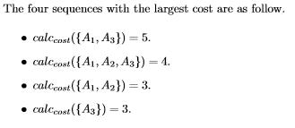

HDU5960. Subsequence
内存限制：4000/2000 MS (Java/Others) 时间限制：131072/131072 K (Java/Others)
题目描述
You may notice the following program. It evaluates a kind of cost about given sequence.

For a sequence A consists of many triples ($cost_0, cost_1$, color), its each subsequence has a cost which calculated by this program. Alice wants to know the cost of the subsequence which is the one owns the k-th largest cost.
For a sequence A consists of many triples ($cost_0, cost_1$, color), its each subsequence has a cost which calculated by this program. Alice wants to know the cost of the subsequence which is the one owns the k-th largest cost.
输入格式
The first line of input contains an integer t, the number of test cases. t test cases follow.
For each test case, the first line consists two integers, n the length of sequence and k. The i-th line in the following n line consists three non-negative integers $cost_0, cost_1$ and color, where 0 <= $cost_0, cost_1$ <= 10000 and 0 <=color <=1, corresponding to the i-th triple in the sequence.
We guarantee that the sequence has at least k non-empty subsequences.
The sum of all n is no more than 400000 and the sum of all k is no more than 400000.
For each test case, the first line consists two integers, n the length of sequence and k. The i-th line in the following n line consists three non-negative integers $cost_0, cost_1$ and color, where 0 <= $cost_0, cost_1$ <= 10000 and 0 <=color <=1, corresponding to the i-th triple in the sequence.
We guarantee that the sequence has at least k non-empty subsequences.
The sum of all n is no more than 400000 and the sum of all k is no more than 400000.
输出格式
For each case, output the answer in one line.
样例
样例输入
1
3 4
2 1 0
1 3 1
3 1 1样例输出
3
Hint